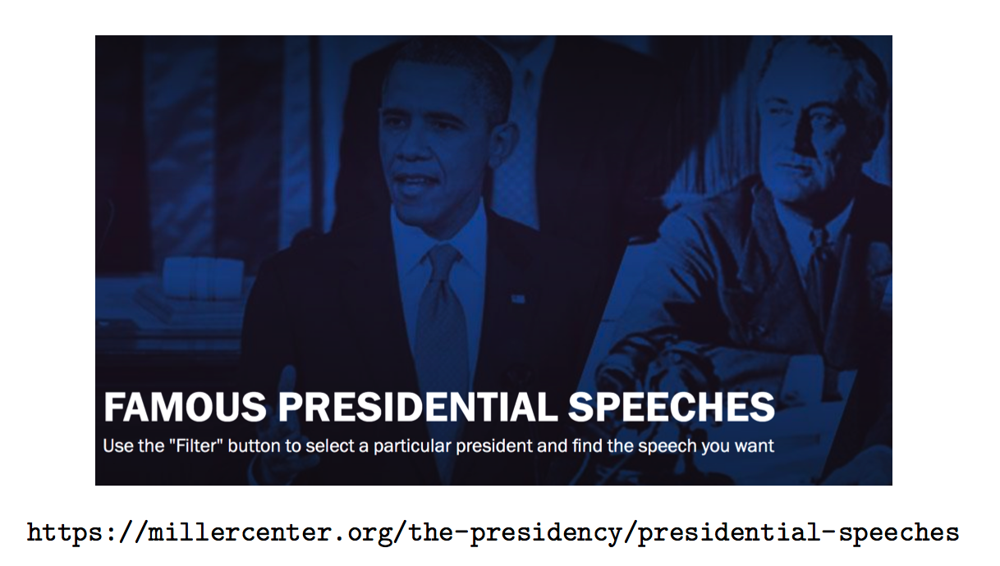

Chapter 5 Bag of Words Sentiment Analysis
One we have a collection of text it’s interesting to figure out what it might mean or infer - if anything at all. In text analysis and NLP (Natural Language Processing) we talk about “Bag of Words” to describe a collection or “corpus” of unstructured text. What do we do with a “bag of words” ?
- Extract meaning from collections of text (without reading !)
- Detect and analyze patterns in unstructured textual collections
- Use Natural Language Processing techniques to reach conclusions
- Discover what ideas occur in text and how they might be linked
- Determine if the discovered patterns be used to predict behavior ?
- Identify interesting ideas that might otherwise be ignored
5.1 Workflow
- Identify and Obtain text (e.g. websites, Twitter, Databases, PDFs, surveys)
- Create a text ”Corpus”- a structure that contains the raw text
- Apply transformations:
- Normalize case (convert to lower case)
- Remove puncutation and stopwords
- Remove domain specific stopwords
- Perform Analysis and Visualizations (word frequency, tagging, wordclouds)
- Do Sentiment Analysis
R has Packages to Help. These are just some of them:
- QDAP - Quantitative Discourse Package
- tm - text mining applications within R
- tidytext - Text Mining using ddplyr and ggplot and tidyverse tools
- SentimentAnalysis - For Sentiment Analysis
However, consider that:
- Some of these are easier to use than others
- Some can be kind of a problem to install (e.g. qdap)
- They all offer similar capabilities
- We’ll look at tidytext
5.2 Simple Example

Find the URL for Lincoln’s March 4, 1865 Speech:
url <- "https://millercenter.org/the-presidency/presidential-speeches/march-4-1865-second-inaugural-address"
library(rvest)
lincoln_doc <- read_html(url) %>%
html_nodes(".view-transcript") %>%
html_text()
lincoln_doc## [1] "TranscriptTranscriptFellow-Countrymen: At this second appearing to take the oath of the Presidential office there is less occasion for an extended address than there was at the first. Then a statement somewhat in detail of a course to be pursued seemed fitting and proper. Now, at the expiration of four years, during which public declarations have been constantly called forth on every point and phase of the great contest which still absorbs the attention and engrosses the energies of the nation, little that is new could be presented. The progress of our arms, upon which all else chiefly depends, is as well known to the public as to myself, and it is, I trust, reasonably satisfactory and encouraging to all. With high hope for the future, no prediction in regard to it is ventured.On the occasion corresponding to this four years ago all thoughts were anxiously directed to an impending civil war. All dreaded it, all sought to avert it. While the inaugural address was being delivered from this place, devoted altogether to saving the Union without war, insurgent agents were in the city seeking to destroy it without war-seeking to dissolve the Union and divide effects by negotiation. Both parties deprecated war, but one of them would make war rather than let the nation survive, and the other would accept war rather than let it perish, and the war came.One-eighth of the whole population were colored slaves, not distributed generally over the Union. but localized in the southern part of it. These slaves constituted a peculiar and powerful interest. All knew that this interest was somehow the cause of the war. To strengthen, perpetuate, and extend this interest was the object for which the insurgents would rend the Union even by war, while the Government claimed no right to do more than to restrict the territorial enlargement of it. Neither party expected for the war the magnitude or the duration which it has already attained. Neither anticipated that the cause of the conflict might cease with or even before the conflict itself should cease. Each looked for an easier triumph, and a result less fundamental and astounding. Both read the same Bible and pray to the same God, and each invokes His aid against the other. It may seem strange that any men should dare to ask a just God's assistance in wringing their bread from the sweat of other men's faces, but let us judge not, that we be not judged. The prayers of both could not be answered. That of neither has been answered fully. The Almighty has His own purposes. \"Woe unto the world because of offenses; for it must needs be that offenses come, but woe to that man by whom the offense cometh.\" If we shall suppose that American slavery is one of those offenses which, in the providence of God, must needs come, but which, having continued through His appointed time, He now wills to remove, and that He gives to both North and South this terrible war as the woe due to those by whom the offense came, shall we discern therein any departure from those divine attributes which the believers in a living God always ascribe to Him? Fondly do we hope, fervently do we pray, that this mighty scourge of war may speedily pass away. Yet, if God wills that it continue until all the wealth piled by the bondsman's two hundred and fifty years of unrequited toil shall be sunk, and until every drop of blood drawn with the lash shall be paid by another drawn with the sword, as was said three thousand years ago, so still it must be said \"the judgments of the Lord are true and righteous altogether.\"With malice toward none, with charity for all, with firmness in the fight as God gives us to see the right, let us strive on to finish the work we are in, to bind up the nation's wounds, to care for him who shall have borne the battle and for his widow and his orphan, to do all which may achieve and cherish a just and lasting peace among ourselves and with all nations."There are probably lots of words that don’t really “matter” or contribute to the “real” meaning of the speech.
word_vec <- unlist(strsplit(lincoln_doc," "))
word_vec[1:20]## [1] "TranscriptTranscriptFellow-Countrymen:" "" "At"
## [4] "this" "second" "appearing"
## [7] "to" "take" "the"
## [10] "oath" "of" "the"
## [13] "Presidential" "office" "there"
## [16] "is" "less" "occasion"
## [19] "for" "an"sort(table(word_vec),decreasing = TRUE)[1:10]## word_vec
## the to and of that for be in it a
## 54 26 24 22 11 9 8 8 8 7How do we remove all the uninteresting words ? We could do it manaully
# Remove all punctuation marks
word_vec <- gsub("[[:punct:]]","",word_vec)
stop_words <- c("the","to","and","of","the","for","in","it",
"a","this","which","by","is","an","hqs","from",
"that","with","as")
for (ii in 1:length(stop_words)) {
for (jj in 1:length(word_vec)) {
if (stop_words[ii] == word_vec[jj]) {
word_vec[jj] <- ""
} }
}
word_vec <- word_vec[word_vec != ""]
sort(table(word_vec),decreasing = TRUE)[1:10]## word_vec
## war all be we but God shall was do let
## 11 8 8 6 5 5 5 5 4 4word_vec[1:30]## [1] "TranscriptTranscriptFellowCountrymen" "At" "second"
## [4] "appearing" "take" "oath"
## [7] "Presidential" "office" "there"
## [10] "less" "occasion" "extended"
## [13] "address" "than" "there"
## [16] "was" "at" "first"
## [19] "Then" "statement" "somewhat"
## [22] "detail" "course" "be"
## [25] "pursued" "seemed" "fitting"
## [28] "proper" "Now" "at"5.3 tidytext
So the tidytext package provides some accomodations to convert your body of text into individual tokens which then simplfies the removal of less meaningful words and the creation of word frequency counts. The first thing you do is to create a data frame where the there is one line for each body of text. In this case we have only one long string of text this will be a one line data frame.
library(tidytext)
library(tidyr)
text_df <- data_frame(line = 1:length(lincoln_doc), text = lincoln_doc)
text_df## # A tibble: 1 × 2
## line text
## <int> <chr>
## 1 1 "TranscriptTranscriptFellow-Countrymen: At this second appearing to take the oath of the Presidential office there is less …The next step is to breakup each of text lines (we have only 1) into invdividual rows, each with it’s own line. We also want to count the number of times that each word appears. This is known as tokenizing the data frame.
token_text <- text_df %>%
unnest_tokens(word, text)
# Let's now count them
token_text %>% count(word,sort=TRUE)## # A tibble: 339 × 2
## word n
## <chr> <int>
## 1 the 58
## 2 to 27
## 3 and 24
## 4 of 22
## 5 it 13
## 6 that 12
## 7 war 12
## 8 all 10
## 9 for 9
## 10 in 9
## # … with 329 more rowsBut we need to get rid of the “stop words.” It’s a good thing that the tidytext package has a way to filter out the common words that do not significantly contribute to the meaning of the overall text. The stop_words data frame is built into tidytext. Take a look to see some of the words contained therein:
data(stop_words)
# Sample 40 random stop words
stop_words %>% sample_n(40)## # A tibble: 40 × 2
## word lexicon
## <chr> <chr>
## 1 sub SMART
## 2 yourself snowball
## 3 took onix
## 4 old onix
## 5 this onix
## 6 above SMART
## 7 about SMART
## 8 four onix
## 9 others SMART
## 10 come onix
## # … with 30 more rows# Now remove stop words from the document
tidy_text <- token_text %>%
anti_join(stop_words)## Joining, by = "word"# This could also be done by the following. I point this out only because some people react
# negatively to "joins" although fully understanding what joins are can only help you since
# much of what the dplyr package does is based on SQL type joins.
tidy_text <- token_text %>%
filter(!word %in% stop_words$word)
tidy_text %>% count(word,sort=TRUE)## # A tibble: 193 × 2
## word n
## <chr> <int>
## 1 war 12
## 2 god 5
## 3 union 4
## 4 offenses 3
## 5 woe 3
## 6 address 2
## 7 ago 2
## 8 altogether 2
## 9 answered 2
## 10 cease 2
## # … with 183 more rowstidy_text %>% count(word,sort=TRUE)## # A tibble: 193 × 2
## word n
## <chr> <int>
## 1 war 12
## 2 god 5
## 3 union 4
## 4 offenses 3
## 5 woe 3
## 6 address 2
## 7 ago 2
## 8 altogether 2
## 9 answered 2
## 10 cease 2
## # … with 183 more rowstidy_text %>%
count(word, sort = TRUE) %>%
filter(n > 2) %>%
mutate(word = reorder(word, n)) %>%
ggplot(aes(word, n)) +
geom_col() +
xlab(NULL) +
coord_flip()
5.4 Back To The PubMed Example
We have around 935 abstracts that we mess with based on our work using the easyPubMed package
# Create a data frame out of the cleaned up abstracts
library(tidytext)
library(dplyr)
text_df <- data_frame(line = 1:length(my_abstracts), text = my_abstracts)
token_text <- text_df %>%
unnest_tokens(word, text)
# Many of these words aren't helpful
token_text %>% count(total=word,sort=TRUE)## # A tibble: 6,936 × 2
## total n
## <chr> <int>
## 1 the 3062
## 2 of 2896
## 3 and 2871
## 4 in 1915
## 5 to 1884
## 6 a 1373
## 7 dialysis 1365
## 8 patients 1335
## 9 home 1281
## 10 with 1035
## # … with 6,926 more rows# Now remove stop words
data(stop_words)
tidy_text <- token_text %>%
anti_join(stop_words)
# This could also be done by the following. I point this out only because some people react
# negatively to "joins" although fully understanding what joins are can only help you since
# much of what the dplyr package does is based on SQL type joins.
tidy_text <- token_text %>%
filter(!word %in% stop_words$word)
# Arrange the text by descending word frequency
tidy_text %>%
count(word, sort = TRUE) ## # A tibble: 6,460 × 2
## word n
## <chr> <int>
## 1 dialysis 1365
## 2 patients 1335
## 3 home 1281
## 4 hemodialysis 674
## 5 hd 463
## 6 hhd 440
## 7 patient 395
## 8 pd 303
## 9 renal 279
## 10 study 268
## # … with 6,450 more rowsSome of the most frequently occurring words are in fact “dialysis,” “patients” so maybe we should consider them to be stop words also since we already know quite well that the overall theme is, well, dialysis and kidneys. There are also synonymns and abbreviations that are somewhat redundant such as “pdd,”“pd,”“hhd” so let’s eliminate them also.
tidy_text <- token_text %>%
filter(!word %in% c(stop_words$word,"dialysis","patients","home","kidney",
"hemodialysis","haemodialysis","patient","hhd",
"pd","peritoneal","hd","renal","study","care",
"ci","chd","nhd","disease","treatment"))
tidy_text %>%
count(word, sort = TRUE) ## # A tibble: 6,441 × 2
## word n
## <chr> <int>
## 1 therapy 193
## 2 conventional 191
## 3 survival 191
## 4 center 186
## 5 compared 180
## 6 clinical 175
## 7 nocturnal 171
## 8 outcomes 171
## 9 quality 171
## 10 data 161
## # … with 6,431 more rowsLet’s do some plotting of these words
library(ggplot2)
tidy_text %>%
count(word, sort = TRUE) %>%
filter(n > 120) %>%
mutate(word = reorder(word, n)) %>%
ggplot(aes(word, n)) +
geom_col() +
xlab(NULL) +
coord_flip()
Okay, it looks like there are numbers in there which might be useful. I suspect that the “95” is probably associated with the idea of a confidence interval. But there are other references to numbers.
grep("^[0-9]{1,3}$",tidy_text$word)[1:20]## [1] 9 273 275 284 288 293 296 305 308 387 388 554 614 671 679 680 682 744 758 762tidy_text_nonum <- tidy_text[grep("^[0-9]{1,3}$",tidy_text$word,invert=TRUE),]Okay well I think maybe we have some reasonable data to examine. As you might have realized by now, manipulating data to get it “clean” can be tedious and frustrating though it is an inevitable part of the process.
tidy_text_nonum %>%
count(word, sort = TRUE) %>%
filter(n > 120) %>%
mutate(word = reorder(word, n)) %>%
ggplot(aes(word, n)) +
geom_col() +
xlab(NULL) +
coord_flip()
5.4.1 How Do You Feel ?
The next step is to explore what some of these words might mean. The tidytext package has four dictionaries that help you figure out what sentiment is being expressed by your data frame.
# NRC Emotion Lexicon from Saif Mohammad and Peter Turney
get_sentiments("nrc") %>% sample_n(20)## # A tibble: 20 × 2
## word sentiment
## <chr> <chr>
## 1 stint negative
## 2 sneaking negative
## 3 pastry joy
## 4 blemish anger
## 5 rue sadness
## 6 lover trust
## 7 smack anger
## 8 enable trust
## 9 refused sadness
## 10 unity trust
## 11 infamous anger
## 12 patronage positive
## 13 distortion negative
## 14 antichrist negative
## 15 counsellor anger
## 16 divorce trust
## 17 probation sadness
## 18 creep negative
## 19 expectation positive
## 20 commute positive# the sentiment lexicon from Bing Liu and collaborators
get_sentiments("bing") %>% sample_n(20)## # A tibble: 20 × 2
## word sentiment
## <chr> <chr>
## 1 irritably negative
## 2 shrouded negative
## 3 retardedness negative
## 4 unorthodox negative
## 5 rhetorical negative
## 6 mystery negative
## 7 righteously positive
## 8 shoddy negative
## 9 droop negative
## 10 trick negative
## 11 trouble-free positive
## 12 unconvincingly negative
## 13 efficient positive
## 14 despotic negative
## 15 magnificently positive
## 16 renounce negative
## 17 mordant negative
## 18 extravagant negative
## 19 loose negative
## 20 courageous positive# Tim Loughran and Bill McDonald
get_sentiments("loughran") %>% sample_n(20)## # A tibble: 20 × 2
## word sentiment
## <chr> <chr>
## 1 devalues negative
## 2 contend negative
## 3 doubted negative
## 4 uncollected negative
## 5 distort negative
## 6 illegible negative
## 7 inaccurate negative
## 8 liquidation negative
## 9 overstates negative
## 10 mismanages negative
## 11 protest negative
## 12 whereon litigious
## 13 riskier uncertainty
## 14 briberies negative
## 15 punishes negative
## 16 weakness negative
## 17 disrupting negative
## 18 depleting negative
## 19 amorphous superfluous
## 20 juris litigious# Pull out words that correspond to joy
nrc_joy <- get_sentiments("nrc") %>%
filter(sentiment == "joy")
nrc_joy## # A tibble: 689 × 2
## word sentiment
## <chr> <chr>
## 1 absolution joy
## 2 abundance joy
## 3 abundant joy
## 4 accolade joy
## 5 accompaniment joy
## 6 accomplish joy
## 7 accomplished joy
## 8 achieve joy
## 9 achievement joy
## 10 acrobat joy
## # … with 679 more rowsSo we will use the nrc sentiment dictionary to see the “sentiment” expressed in our abstracts.
bing_word_counts <- tidy_text_nonum %>%
inner_join(get_sentiments("nrc")) %>%
count(word,sentiment,sort=TRUE)## Joining, by = "word"t the positive vs negative words
bing_word_counts %>%
group_by(sentiment) %>%
top_n(10) %>%
ungroup() %>%
mutate(word = reorder(word, n)) %>%
ggplot(aes(word, n, fill = sentiment)) +
geom_col(show.legend = FALSE) +
facet_wrap(~sentiment, scales = "free_y") +
labs(y = "Contribution to sentiment",
x = NULL) +
coord_flip()## Selecting by n
Let’s create a word cloud
library(wordcloud)
#
tidy_text_nonum %>%
count(word) %>%
with(wordcloud(word,n,max.words=90,scale=c(4,.5),colors=brewer.pal(8,"Dark2")))
5.5 BiGrams
Let’s look at bigrams. We need to go back to the cleaned abstracts and pair words to get phrase that might be suggestive of some sentiment
text_df <- data_frame(line = 1:length(my_abstracts), text = my_abstracts)
dialysis_bigrams <- text_df %>%
unnest_tokens(bigram, text, token = "ngrams", n = 2)
dialysis_bigrams %>%
count(bigram, sort = TRUE)## # A tibble: 41,738 × 2
## bigram n
## <chr> <int>
## 1 in the 382
## 2 of the 310
## 3 home dialysis 300
## 4 home hemodialysis 279
## 5 of home 195
## 6 peritoneal dialysis 193
## 7 associated with 174
## 8 home hd 153
## 9 home haemodialysis 144
## 10 in center 144
## # … with 41,728 more rowsBut we have to filter out stop words
library(tidyr)
bigrams_sep <- dialysis_bigrams %>%
separate(bigram,c("word1","word2"),sep=" ")
stop_list <- c(stop_words$word,"dialysis","patients","home","kidney",
"hemodialysis","haemodialysis","treatment","patient","hhd",
"pd","peritoneal","hd","renal","study","care",
"ci","chd","nhd","esrd","lt","95","0.001")
bigrams_filtered <- bigrams_sep %>%
filter(!word1 %in% stop_list) %>%
filter(!word2 %in% stop_list)
bigram_counts <- bigrams_filtered %>%
count(word1, word2, sort = TRUE)
bigrams_united <- bigrams_filtered %>%
unite(bigram, word1, word2, sep = " ")
bigrams_united %>% count(bigram, sort = TRUE) %>% print(n=25)## # A tibble: 11,842 × 2
## bigram n
## <chr> <int>
## 1 replacement therapy 71
## 2 vascular access 65
## 3 technique failure 54
## 4 confidence interval 41
## 5 left ventricular 39
## 6 blood pressure 36
## 7 short daily 35
## 8 clinical outcomes 33
## 9 thrice weekly 30
## 10 technique survival 29
## 11 hazard ratio 26
## 12 quality improvement 26
## 13 adverse events 22
## 14 6 months 21
## 15 access related 21
## 16 arteriovenous fistula 21
## 17 12 months 19
## 18 ventricular mass 18
## 19 3 times 15
## 20 buttonhole cannulation 15
## 21 cost effective 15
## 22 observational studies 15
## 23 retrospective cohort 15
## 24 cost effectiveness 14
## 25 daily life 14
## # … with 11,817 more rowslibrary(tidyquant)
bigram_counts %>%
filter(n > 30) %>%
ggplot(aes(x = reorder(word1, -n), y = reorder(word2, -n), fill = n)) +
geom_tile(alpha = 0.8, color = "white") +
scale_fill_gradientn(colours = c(palette_light()[[1]], palette_light()[[2]])) +
coord_flip() +
theme_tq() +
theme(legend.position = "right") +
theme(axis.text.x = element_text(angle = 45, vjust = 1, hjust = 1)) +
labs(x = "first word in pair",
y = "second word in pair")